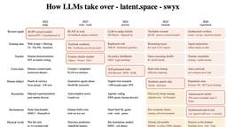
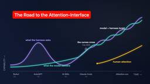
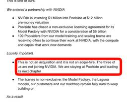
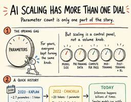

Latent.Space
https://www.latent.space
The AI Engineer newsletter + Top technical AI podcast. How leading labs build Agents, Models, Infra, & AI for Science. See https://latent.space/about for highlights from Greg Brockman, Andrej Karpathy, George Hotz, Simon Willison, Soumith Chintala et al! Click to read Latent.Space, a Substack publication with hundreds of thousands of subscribers.
フィード

[AINews] 10% worse, 100x cheaper, 10000x faster: Why Simulation is taking over
Latent.Space
Did you think RSI stopped at model training?
8時間前

The Evolution of the Agent Harness
Latent.Space
Models keep absorbing the harness into their weights — soon, it will be a harness for human attention rather than for the model.
8時間前
Simulation: the new Scaling Law — Joon Sung Park, Simile AI
Latent.Space
Simile’s CEO about his journey from the viral Generative Agents to creating 8 Billion Digital Twins of every living human... and why it’s gone from fun exploration to very serious business.
16時間前

[AINews] Poolside gets $12B reverse-execuhire to NVIDIA; founders stay for $1B, employees go for $6B, Infraco scaling to 7GW neocloud
Latent.Space
Yes, we’re confused too.
1日前
The /wayfinder Skill: Navigating the “Fog of War” of Planning
Latent.Space
Matt Pocock tells us about his /wayfinder skill, for greenfield projects or for when the way forward is unclear.
2日前

[AINews] Death of Params: Z.ai CEO Jie Tang on GLM 5.3 and the new Post-training Scaling Law
Latent.Space
Every lab CEO is on X now
2日前
[AINews] Memory prices up 500% in 12 months
Latent.Space
the Memory crunch continues - Moore’s Law reversed to 2007 levels
3日前
Frontier Model Cost and Open-Weights Popularity is Driving Demand for Model Routing
Latent.Space
Glean CEO Arvind Jain explains why model routing helps control AI costs for organizations, and how human feedback loops at scale improve its routing systems.
4日前
[AINews] Stripe buys OpenRouter for $7B
Latent.Space
No GPUs, no Agents, just really, really, really good infra and distribution.
5日前
React for Agents: Astro Creator Brings Hooks to his Meta-Harness, Flue 1
1
Latent.Space
Flue 2 takes its inspiration from React. Creator Fred Schott, of Astro fame, tells Latent Space why he added hooks and why agents are defined by their harnesses.
7日前

[AINews] SpaceXAI Grok 4.6 and Grok @Bot
Latent.Space
AI teammate category just had its most significant new entrant yet
10日前
[AINews] How to steal a Reasoning Trace
Latent.Space
Speculative Decoding by any other name would distil as sweet
10日前
🔬The BioAI Phase Shift - Matthew McPartlon & Neil Patil, Chai Discovery
Latent.Space
Pharma is suddenly paying for Bio × AI tools, and Chai is leading the pack with four deals closed this summer. Cofounder Matt McPartlon and Product leader Neil Patil explain why.
11日前
[AINews] Muse Glimmer and Spark: Open Weights return Personal Superintelligence promise
Latent.Space
a small win for american open models - Glimmer runs on a fits on a single RTX 3090!
11日前
[AINews] Zawinski's Law of MultiAgents
Latent.Space
a quiet day lets us find some connections among recent themes
15日前
[AINews] Jeff, Sanjay, Oriol, and Quoc depart DeepMind; Demis to Chair; Koray to SVP — what is going on at GDM???
Latent.Space
The end of an era.
16日前
[AINews] Megakernels are so dead and so back
Latent.Space
A quiet day lets us highlight a Cursor launch and an engineering debate
18日前